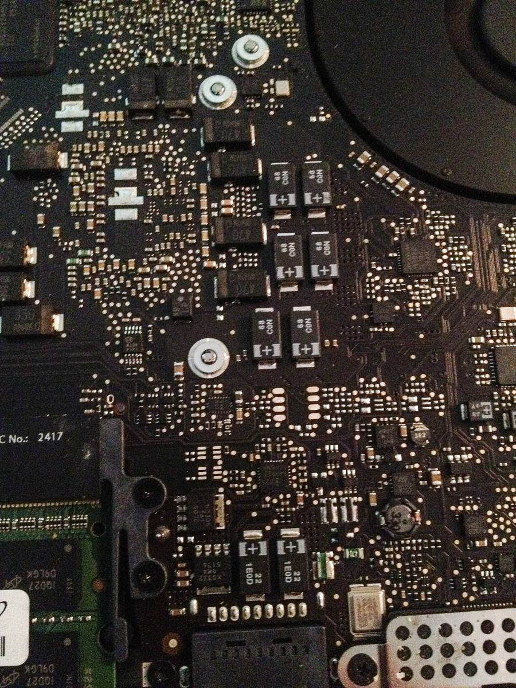
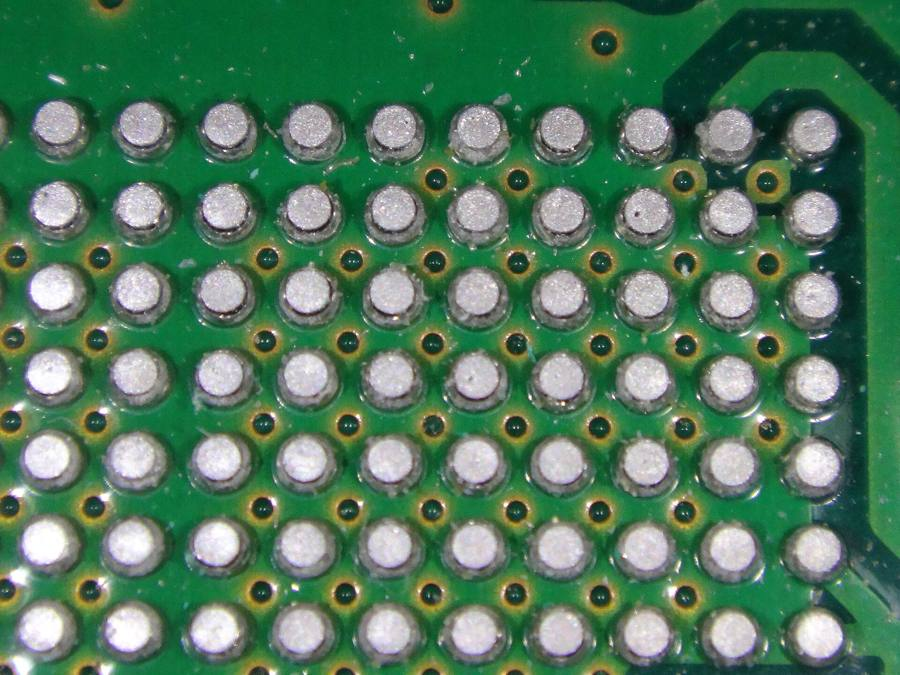
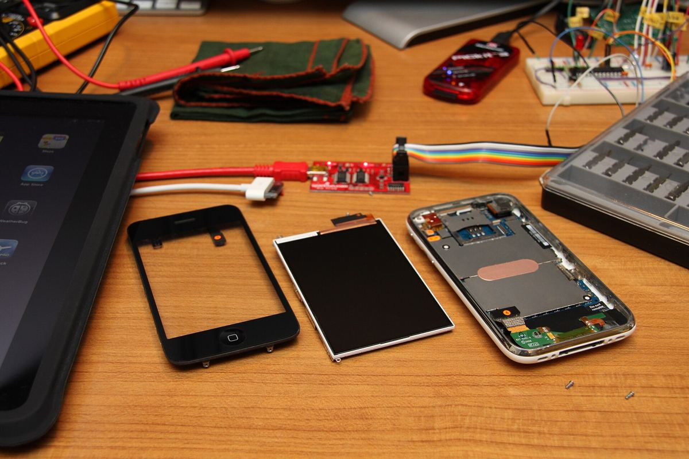
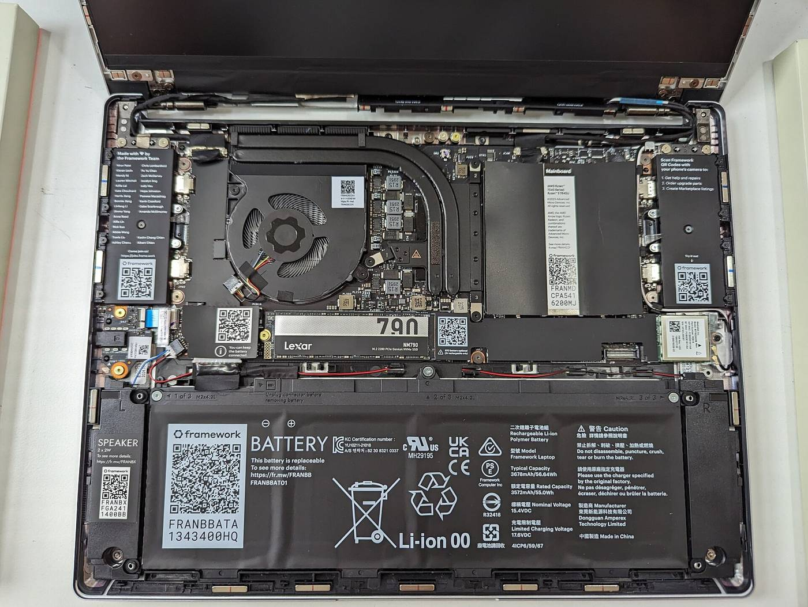
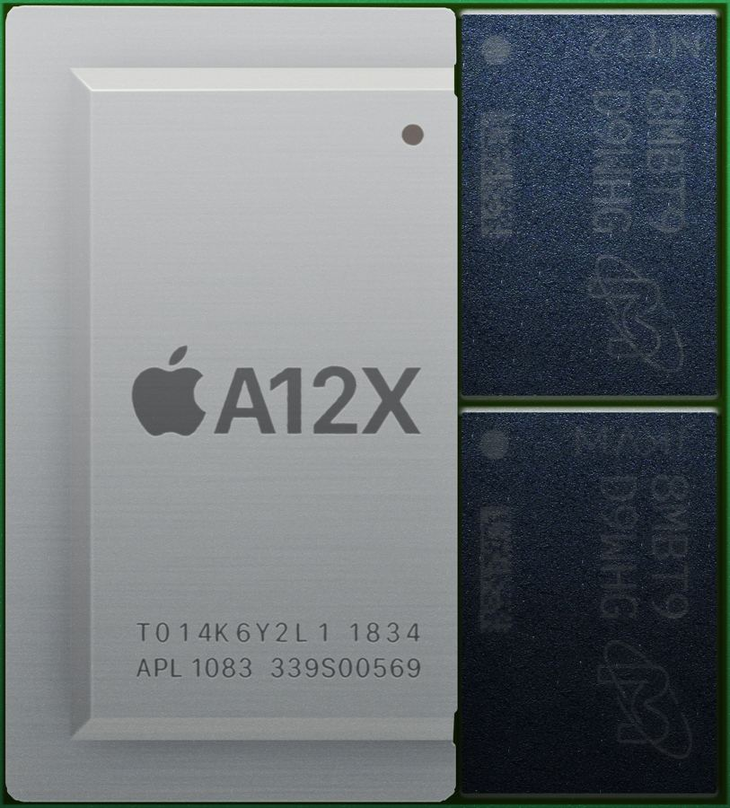
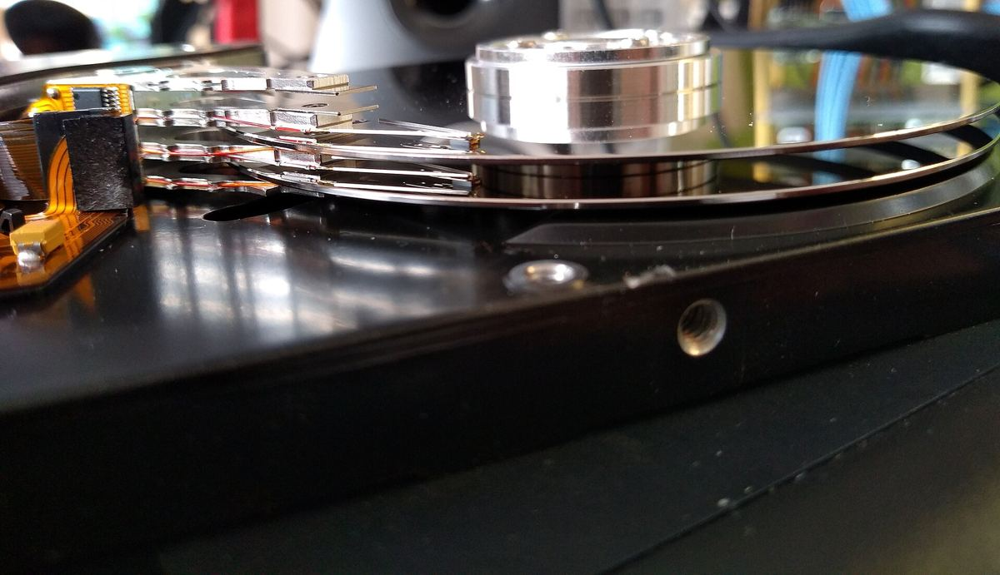
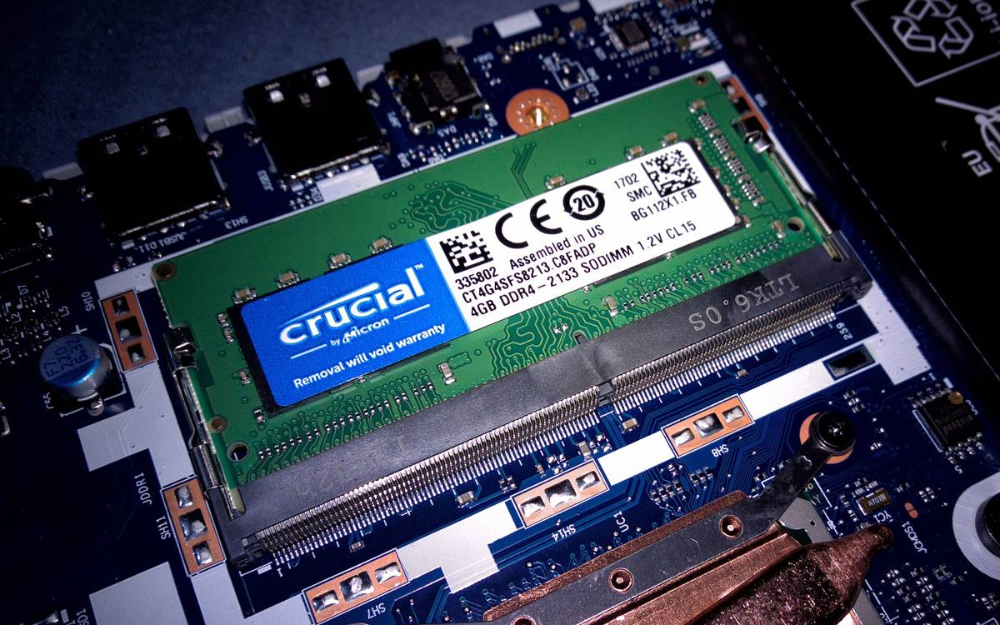
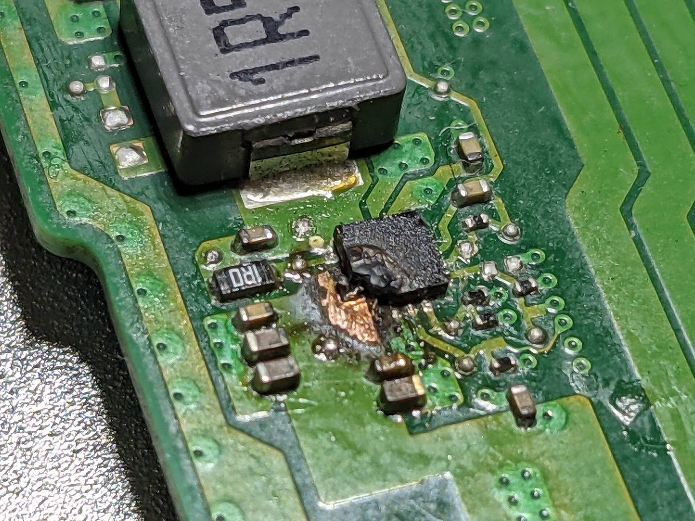
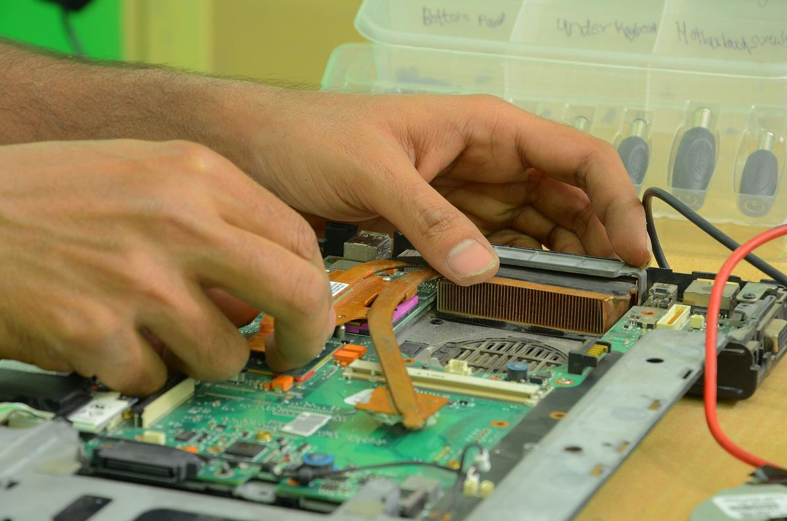

דסקטופ ישראלDeskTop Israel מעבדת מחשבים בקריות.A computer lab in the Krayot.
דסקטופ ישראל – DeskTop Israel: מעבדת מחשבים בקריות חיפה (PC & Apple) לנייחים וניידים, אייפון ואייפד.DeskTop Israel: a computer lab in the Haifa Krayot (PC & Apple) for desktops and laptops, iPhone and iPad.
PC ו-ApplePC & AppleמקרובUp closeכרטיס תיקוןRepair ticketהגעהVisit
תמונות להמחשה · הצביעו על תמונה כדי להגדילIllustrative photos · point at one to magnify
PC ו-Apple. על אותו שולחן.PC and Apple. On one bench.
מחשבים נייחים וניידים, מחשבי Apple, אייפון ואייפד.Desktops and laptops, Apple computers, iPhone and iPad.
כל רכיב. מקרוב.Every part. Up close.
פותחים את המכשיר ובודקים אותו עד הלוח עצמו.The device is opened and checked down to the board itself.
תמונות להמחשהIllustrative photos
מה מגיע למעבדה.What comes to the lab.
תמונה להמחשה: זיכרון על לוח של מחשב ניידIllustrative photo: memory on a laptop board
כרטיס תיקון. לפני שמתקשרים.A repair ticket. Before you call.
- בוחרים מכשירPick the device
- מסמנים מה קורהMark what’s happening
- מתקשרים עם הכרטיס מול העינייםCall with the ticket in front of you
- תאריךDate
- מכשירDevice
- מה קורהWhat’s happening
החשמונאים 39א, קרית מוצקין39A HaHashmonaim St, Kiryat Motzkin
04-877-7710
ביקורותReviews
”השירות היה צויין, מהיר ובמחיר הוגן. מי שמחפש איש מחשבים אני ממליץ עליו“
“The service was excellent, fast and fairly priced. If you’re looking for a computer person, I recommend him.”
”שילוב אמיתי של אמינות מקצועיות ושירות מעולה. ממליצה בחום“
“A real combination of reliability, professionalism and excellent service. Warmly recommended.”
”עזרו לי בכל שלב ומכל הלב למרות שלא היו צריכים“
“They helped me at every step, wholeheartedly, even though they didn’t have to.”
”הטכנאי ידע לאתר את הבעיה במהירות, הסביר בסבלנות ותיקן את המחשב בצורה יסודית.“
“The technician found the problem quickly, explained patiently and repaired the computer thoroughly.”
שאלות קצרות.Short questions.
אילו מכשירים מגיעים למעבדה?Which devices come to the lab?
מחשבים נייחים וניידים, PC ו-Apple, וגם אייפון ואייפד.Desktop and laptop computers, PC and Apple, and also iPhone and iPad.
איפה המעבדה?Where is the lab?
ברחוב החשמונאים 39א, בקרית מוצקין.At 39A HaHashmonaim Street, Kiryat Motzkin.
מתי פתוח?When is it open?
שעות הפתיחה לא מפורסמות בגוגל, אז כדאי להתקשר לפני שמגיעים: 04-877-7710.The opening hours aren’t listed on Google, so it’s best to call before you come: 04-877-7710.
מה כדאי להגיד בטלפון?What should I say on the phone?
איזה מכשיר זה ומה קורה איתו. כרטיס התיקון למעלה מסדר את זה בשבילכם.Which device it is and what’s happening with it. The repair ticket above puts it together for you.